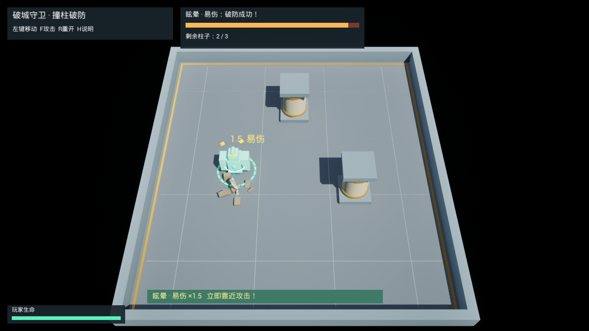

01 / ENVIRONMENTAL OPPORTUNITY
Breach Guardian

Unreal editor capture · staged mechanic demonstration · 10 Oct 2026
For players who can move and attack, but are new to boss-specific rules. Intended difficulty: introductory.
Design question
Can telegraphs and environmental objects turn ordinary movement into an offensive opportunity, without a dodge button?
Decision & rule
Read the tracking-to-lock transition and redirect the charge into a pillar. A successful collision destroys that pillar and creates a 3.2-second stun with 1.5× incoming damage. Only three pillars are available. A charge hit costs 2 HP—40% of the starting 5 HP—and causes a 0.8-second knockdown that blocks movement and attacks.
Trade-off
Finite pillars limit repeat use. Normal attacks and shorter recovery openings still advance the fight when no pillar is used.